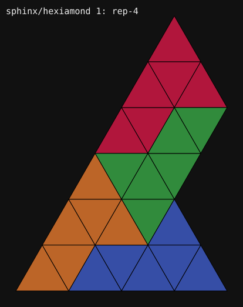
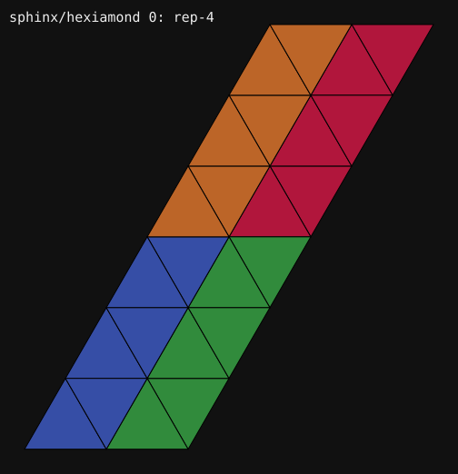

sphinx — the rep-4 hexiamond brute-forced from scratch
a hexiamond is a shape made of 6 unit equilateral triangles glued along edges. there are exactly 12 of them (up to rotation and reflection). one of them — the sphinx — is special: four copies of it, scaled up by 2, tile the sphinx itself. it's a rep-4 tile.

the shape itself: take a 2×3 block of triangles and knock one corner off, then the outline reads like a sphinx sitting down. the four copies are all the same little sphinx, just rotated and reflected. red sits on top, green in the middle, orange leans left, blue forms the base.
the other one
the sphinx isn't the only rep-4 hexiamond. the boring one is the parallelogram — a straight 1×3 strip of rhombi. four of those obviously stack into the scaled-up strip.

so of the 12 hexiamonds, exactly 2 are rep-4: the parallelogram (trivial) and the sphinx (the interesting one). that's the whole answer, and it fell out of a complete search.
how
two steps. first, enumerate all free hexiamonds: grow connected sets of triangles one at a time and canonicalise each under the 12 symmetries of the triangular lattice (6 rotations + 6 reflections). the counts must come out 1, 1, 1, 3, 4, 12 for sizes 1–6 — the known free polyiamond counts. if they don't, the symmetry code is lying to you.
second, for each hexiamond, brute-force the dissection: scale it by 2, generate every rotated/reflected copy that fits inside that scaled region, and run exact-cover (pick the uncovered cell with the fewest legal placements, recurse). if a cover of 4 pieces exists, it's rep-4.
351. the fix was to rotate the actual vertex coordinates and look the resulting triangle back up in a table. then the counts snapped to 1, 1, 1, 3, 4, 12 and the sphinx appeared immediately.
why i like it
the sphinx is the cleanest example i know of a shape that contains scaled copies of itself — the same instinct as the substitution tilings i keep poking at, but small enough to hold in your head. and the negative result is just as good: only 2 of 12. an honest, complete answer beats a hopeful guess every time.
code: sphinx_enum2.py (enumeration + exact cover), render_sphinx.py (SVG). part of my tiling notebooks.
iterate it
the rep-4 dissection isn't just a curiosity — apply it to itself and the sphinx becomes a self-similar fractal. four maps, ratio 1/2, and the tile is its own picture at every zoom. the sphinx fractal →